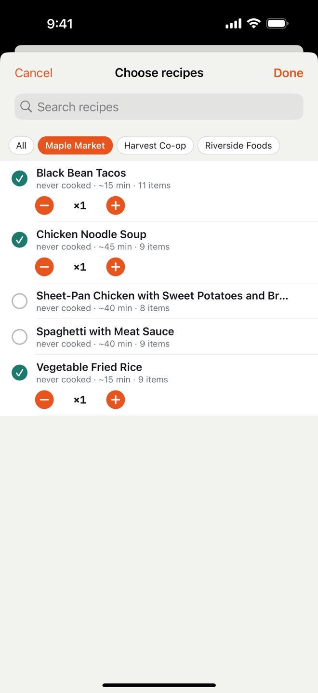
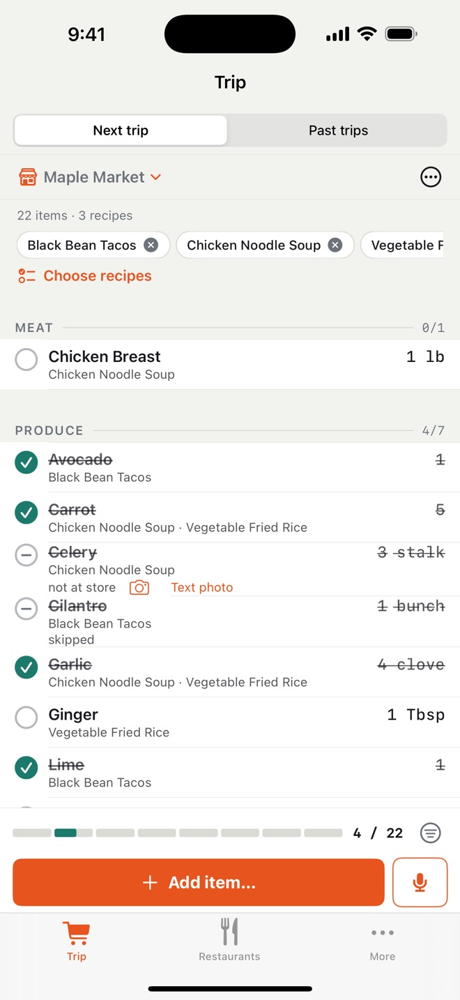
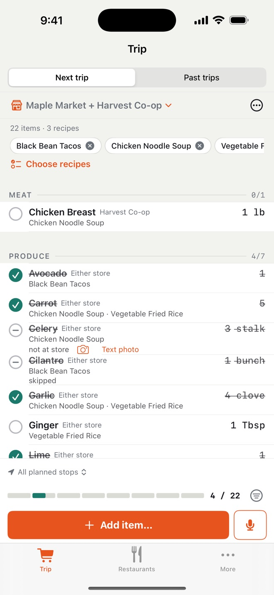
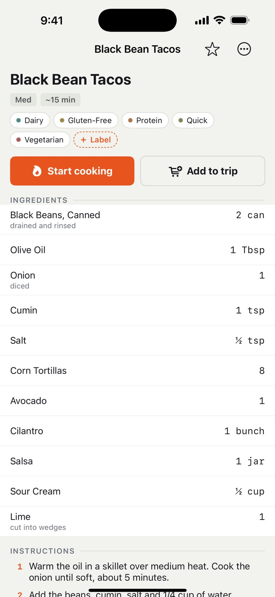
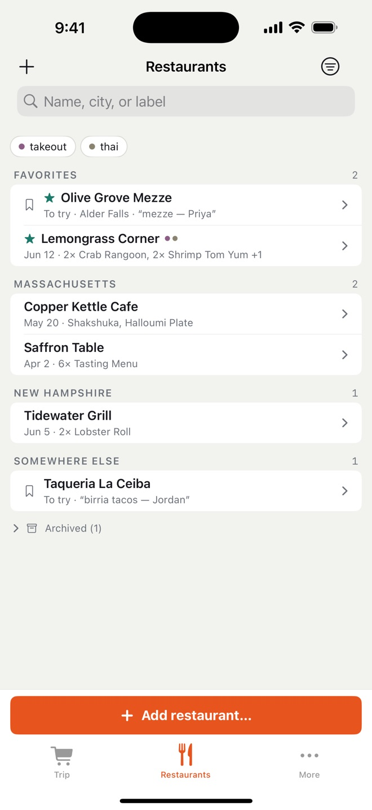

Itadaki turns the recipes you plan to cook into one shopping list, sorted by aisle. Pick recipes, change quantities, skip what you already have, then check items off as you shop on your iPhone or Apple Watch.





Add recipes by pasting text, sharing a web link or taking a photo. Share a household through iCloud and everyone sees the same list as it changes. Itadaki also keeps the restaurants you like and the dishes you'd order again.
No ads, no accounts, no tracking. Your data stays on your devices and in your own iCloud.
Itadaki is free for a month, starting the first time you check something off. After that, it costs $1.99 a month, $19.99 a year or $59.99 once in the US, and one purchase covers your household.
Itadaki needs iOS 17 or later. The Apple Watch app is optional.